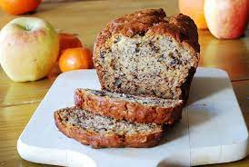

Banana Bread

Desciption
This homely and wholesome cake is also light and moist, with the natural sweetness of sticky bananas and the warm toastiness of nuts
Ingredients
- ½ cup butter, melted
- 1 cup white sugar
- 2 eggs
- 1 teaspoon vanilla extract
- 1 ½ cups all-purpose flour
- 1 teaspoon baking soda
- ½ teaspoon salt
- ½ cup sour cream
- ½ cup chopped walnuts
- 2 medium bananas, sliced
Steps
- Preheat oven to 350 degrees F (175 degrees C). Grease a 9x5 inch loaf pan.
- In a large bowl, stir together the melted butter and sugar. Add the eggs and vanilla, mix well. Combine the flour, baking soda
and salt, stir into the butter mixture until smooth. Finally, fold in the sour cream, walnuts and bananas. Spread evenly into
the prepared pan.
- Bake at 350 degrees F (175 degrees C) for 60 minutes, or until a toothpick inserted into the center of the loaf comes out clean.
Cool loaf in the pan for 10 minutes before removing to a wire rack to cool completely.